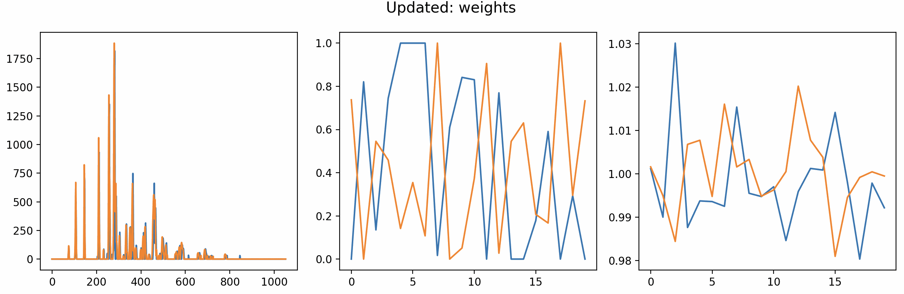
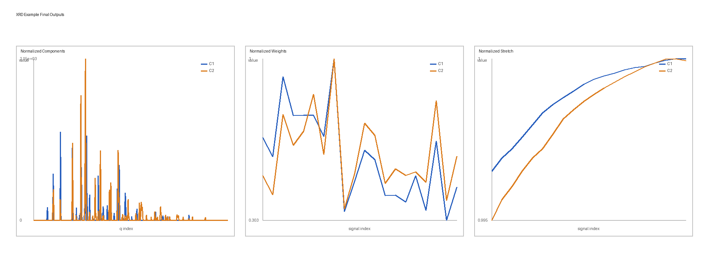

Getting started
diffpy.stretched-nmf implements the stretched NMF algorithm for factorizing signal
sets while accounting for uniform stretching along the independent axis.
Installation
The preferred method is conda:
conda config --add channels conda-forge
conda create -n diffpy.stretched-nmf_env diffpy.stretched-nmf
conda activate diffpy.stretched-nmf_env
For interactive plotting with show_plots=True, use a GUI-capable desktop
environment. Conda installs use matplotlib-base, which is sufficient for
plotting but still depends on an available interactive Matplotlib backend.
Alternatively, install from PyPI with pip:
pip install diffpy.stretched-nmf
For source installs (after cloning the repo):
pip install .
Quick check
Verify the CLI and Python import:
snmf --version
python -c "import diffpy.stretched_nmf; print(diffpy.stretched_nmf.__version__)"
Basic usage
The main entry point is the SNMFOptimizer class. Create an
SNMFOptimizer with hyperparameters, then pass the source matrix to
fit. The source matrix shape is
(length_of_signal, number_of_signals).
import numpy as np
from diffpy.stretched_nmf.snmf_class import SNMFOptimizer
rng = np.random.default_rng(7)
source_matrix = rng.random((300, 24)) # (signal_length, n_signals)
snmf = SNMFOptimizer(
n_components=3,
max_iter=400,
min_iter=20,
tol=5e-7,
rho=0,
eta=0,
random_state=7,
show_plots=False,
)
snmf.fit(source_matrix=source_matrix, reset=True)
components = snmf.components_
weights = snmf.weights_
stretch = snmf.stretch_
Notes
rhocontrols the stretching penalty (set to0for no stretching).etacontrols sparsity (start at0and tune after selectingrho).Use
reset=Falseonly when you want to continue from the current solution.
XRD example
A complete real-data example is included in
docs/examples/XRD_MgMnO_YCl_real.py. It reads the input matrices from
docs/examples/data/XRD_MgMnO_YCl_real.
Run it from the repository root:
python docs/examples/XRD_MgMnO_YCl_real.py
The script runs a tuned XRD fit and writes
my_norm_components.txt, my_norm_weights.txt, and
my_norm_stretch.txt to the current working directory.
{kind=link}

Preview from the show_plots interface from before the optimization has settled down.
{kind=link}

Final outputs: normalized components, normalized weights, and normalized stretch shown side by side.
Next steps
Browse the rest of the docs for release notes and license information.